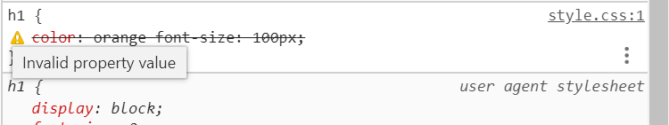

昨天付款買了六角學院的「使用 HTML、CSS 開發一個網站」跟「掌握 Git & Github 程式時光機」，今天收到連結了很雀躍～
學員有專屬的社團，裡面還整理了各種階段文章跟討論，覺得很棒。
跟免費課程不同的地方是，HTML的課程旁邊可以開逐字稿，可以直接看逐字稿跳進度很方便！
畢竟之前全端的課已經寫了不少HTML跟CSS，有很多地方得跳過，但光只有影片的話，可能會跳過不該跳掉的細節，所以覺得這個功能很貼心ˊˇˋ
以下就繼續一邊看影片一邊寫筆記。
網頁編輯器、HTML基礎教學
定義HTML格式
- HTML5 Style Guide and Coding Conventions
- 「」：HTML5第一行要記得寫，這個格式才能通用XML，其他大小寫雖然HTML可以接受，但XML不行。如果發現有網頁沒寫，可能是很舊的網頁或寫網頁的人不知道要寫。
圖片
1 | <img src="圖片位址" title="提示文字"> |
超連結
1 | <!-- 常見格式 ---> |
清單
CSS 常用語法
匯入CSS
撰寫CSS檔案，格式如下：
1 | selector{ |
在head標籤裡用link標籤匯入：
1 | <link rel="stylesheet" href="CSS檔案路徑"> |
樣式有沒有成功渲染可以用chrome開發人員工具檢查。

類別選擇器
「.class名稱」
問答有人提到Ctrl+Shift+G可以在選取的範圍外面包上標籤。
擬態選擇器
「:擬態選擇器」
可以用來提示使用者目前的區塊有功能（例如連結、輸入框）。
美化文字排版常見屬性
- font-family：可以寫好幾個字型，愈前面的愈優先使用；要用中文的字型可以查對應的英文名稱。
- line-height
- text-indent：首行縮排，可以看字體多大，要縮幾個字就成以字體的倍數。
- text-decoration
- 「text-decoration: underline;」可以讓文字有底線（無法調整距離跟寬度）。
- 「border-bottom: 1px solid black;」是元素本身的邊線，可以調寬度；再利用「padding-bottom: 10px;」調整邊線的距離。
- text-decoration-style：可以直接寫在text-decoration的後面。
- text-align
- 「text-align: center;」可以把文字置中。
- 「margin: 0 auto;」可以把區塊置中（例如div、ul）。
Emmet插件可以用「lorem數字」按tab產生假字。
Border
上下左右、寬度、樣式、顏色都可以調整。
能用CSS做的效果盡量做，減少使用圖片。
使用CSS變更HTML標籤特性
CSS Reset
Browser有一些預設的CSS樣式。
Chrome：user agent stylesheet
Safari：使用者代理程式樣式表
可以使用別人寫好的Reset將Browser的樣式都清除，也可以寫成自己的版本，方便使用：
Meyerweb CSS Tools: Reset CSS
Bootstrap有預設CSS Reset。
ul 預設的 list-style-position 在區塊元素的外面，必須加上 margin-left 才看得到；也可以用「list-style-position: inside」讓項目符號在區塊裡面。
行內元素和區塊元素
1 | // 行內元素 |
- 區塊元素在預設狀態下，會占滿父元素的寬度。
- 預設區塊元素例如ul、li、h1~6等，如果想讓清單並排，要把li變成inline（項目符號會消失）。
- inline-block有寬高的屬性；inline沒有。
- inline-block間會有空白的解法：
- 刪掉block間的空白、tab與換行
- 將block外層的font-size設為0（如果block有要顯示的文字，要再設定）
- 用「float: left」代替（後面會需要寫清除樣式的語法）
- margin設定負值（不好用）
<div>和<span>
- 排版用，沒有語意。
- div是區塊元素；span是行內元素。
- 「A B」：descendant selector，A標籤底下所有的B標籤
- 「A>B」：child selector，A標籤往下一層的B標籤
- 「A+B」：adjacent sibling selector，A標籤後面同層的B標籤
- 「A~B」：general sibling selector，與A標籤同層的所有B標籤
利用漸層CSS Gradients做雙色文字和區塊：
See the Pen 雙色文字和區塊 by Lynn Huang (@chiaya710623) on CodePen.
margin和padding
- margin：區塊外的邊界（可以有負值）
- padding：區塊內的邊界
- 區塊大小會受到border和padding的影響，不受margin影響。
Box Model
Chrome可能會顯示border有小數，不影響。
margin屬性的參數
- 「margin: auto」：讓區塊水平置中
- 「margin: 0 0 0 0」：數值順序為上右下左
- 「margin: 0 0」：上下跟左右。
可以用flex屬性實現垂直置中：Casper Blog 圖解：CSS Flex 屬性一點也不難
See the Pen 水平置中與垂直置中 by Lynn Huang (@chiaya710623) on CodePen.
CSS3「box-sizing: border-box」
使區塊大小不受border和padding影響。
「*」selector：所有標籤
5 & 6: 網頁排版技巧
Float
用float: left 或right可以使區塊並排。
從下面例子可以看到併排的情形，其中的layout高度並不會被裡面的區塊撐大，必須用clear決定浮動結束的位置。
See the Pen float三欄式作業 by Lynn Huang (@chiaya710623) on CodePen.
Clear：清除浮動
在要清除浮動的標籤之後的區塊（在下一個區塊或另開一個.clearfix），使用clear:both。
See the Pen 5.28練習 by Lynn Huang (@chiaya710623) on CodePen.
排版技巧
- 區塊可以不設定高度，讓區塊大小隨內容調整。
- 將li用「float: left」改為併排，並利用padding和margin製作做出橫向的選單。
See the Pen 5.29~31練習 by Lynn Huang (@chiaya710623) on CodePen.
利用偽元素清除浮動
利用偽元素選擇器在父元素清除浮動，可以減少使用div。
See the Pen 5.33練習 by Lynn Huang (@chiaya710623) on CodePen.
Position
「position: absolute;」：再用「left: 0px」「bottom: 0px」調整位置
- 「absolute」：以父元素為範圍，「right: 5px」為「置右再往左0px」，使用負值的話會超出範圍
- 「relative」：以父元素為範圍，「right: 5px」為「右邊有迷之力量把我往左邊移5px」，使用負值就往反向移動
- 「static」：所有元素預設的值，依據瀏覽器自動排版
- 「fixed」：以瀏覽器為範圍
Z-index
「z-index: 0;」以參數決定元素層次關係；如果z-index相同，程式碼愈後面的區塊在上層
設定0~30差不多就夠了。
利用float和position設計產品列表
See the Pen 6.37~39練習 by Lynn Huang (@chiaya710623) on CodePen.
切圖技巧
Photoshop切圖
利用「切片工具」選擇想要的圖片（如果底下有其他圖層，可以先按眼睛關掉）；並用「檔案」>「轉存」>「儲存為網頁用」即可存出想要的圖片。
- 用「切片選取工具」雙擊選取的範圍可以更改圖片名稱。
- 在儲存畫面選擇「選取的切片」，就不會存到其他的圖片。
background
- 「background-image: url(路徑)」：加入背景圖片（用逗號區隔多張圖片）
- 「background-repeat」：設定重複方式，例如「no-repeat」、「repeat-x」、「repeat-y」
- 「background-size:100%」：讓圖片自適應元素大小
- 「background-color」：設定背景顏色
- 所有屬性可以寫在同一行
- 可以利用Photoshop的滴管按右鍵取得色碼
See the Pen 7.43~47練習 by Lynn Huang (@chiaya710623) on CodePen.
Image-replacement圖片取代文字
當網站的logo（標題）是圖片不是文字，而無法被搜尋引擎讀取時，需要用一些技巧來處理：
1 <h1>網站名稱</h1>
2 依照所需在h1或內層的標籤以logo作為背景圖片
3 「text-indent:101%」：以縮排將文字擠出所在的元素
4 「white-space: nowrap」：使文字不斷行
5 「overflow: hidden」：隱藏超出元素的文字
表格與表單設計技巧
表格
- <table>：表格最外層的標籤，類別可以下在這裡
- <tr>：表格第二層標籤，決定列數
- <td>：第三層，決定欄數與內容
- <th>：第三層，與td差不多，但表示是標題
- 「border-collapse: collapse」能使表格邊線重疊；「border-spacing: 0」決定表格間隙。
按Ctrl+d可以多選相同的標籤
表單
- <form>
- action：回傳目標
- method：回傳方法
- <input>
- id
- name：資料庫欄位名稱
- value：資料庫欄位內容；但submit為按鈕文字
- placeholder：提示文字
- type：輸入類型（CSS選擇器可以指定類型：「input[type=text]」）
- text：一般文字欄位
- password：密碼（會變成米字）
- submit：送出按鍵（用<button type=”submit”>也可以）
- button：單純的按鈕
- radio：單選（可用JS改為多選但不建議）；checkbox：多選
- 相同name為同一組
- checked：已選
- date：選擇日期（value格式為yyyy-mm-dd）
- <select name=”欄位名稱”>：下拉式選單
- <textarea>：多行文字欄位
- 預設文字寫在標籤之間
- 如果有placeholder，標籤間不可以有任何東西，不然會被當成預設文字
- cols：每行字數
- rows：行數
- <label>：點選後會聚焦到for裡所指定id的欄位
- <fieldset>：能把input分組處理
Form相關CSS樣式
- 「cursor: pointer」：滑鼠揮過的時候游標變成手指圖案
- 「textarea:focus, input:focus{outline: none;}」：清除focus的框
Pure：解決瀏覽器兼容性問題
CSS3技巧
圓弧效果
漸層效果
陰影效果
「box-shadow: X位移 Y位移 陰影程度 顏色」
可以用逗號分隔多個陰影
查詢語法相容性
- Vendor Prefix：有些語法可能還不夠通用，需要加上前綴詞才能讓某些瀏覽器相容。
- Can I Use：查詢瀏覽器支援CSS3和HTML5語法的情形，也能查詢是否能用前綴詞相容。
- What CSS to prefix?：簡單查詢是否需要使用前綴詞
- CSS Support Guide for Email Clients | Campaign Monitor：查詢語法在email中的相容性
（9.66）查詢瀏覽器市占率
最後，讓你的網頁變得更專業
CSS權重
CSS Specificity
!important > style > id > class > tag
Head資訊
- 網頁標題：<title>網頁標題</title>
- 網頁icon：<link rel=”shortcut icon” type=”image/x-icon” href=”favicon.ico”>
- 為了適應各種版型，似乎可以加上「sizes=”16x16 24x24 32x32 48x48 64x64 128x128”」之類的
- 手機icon：The complete guide to HTML icons — iOS, Android, desktop and more…
- 網頁描述：<meta name=”description” content=”網頁描述文字”>
- 關鍵字：<meta name=”keyword” content=”關鍵字1, 關鍵字2”>
- 讓IE以最新版渲染：<meta http-equiv=”X-UA-Compatible” content=”IE=Edge”>
- Fackbook預覽：
- 引用CSS和JS（先CSS後JS）：